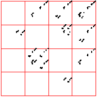

|
| Here we see a cardiac time series, consisting of about 2100 interbeat intervals.
The middle bin boundary is the median (=middle value) of the time series. In the left time
series, the other bin boundaries are placed .05 of the range above and below the median.
In the right, the first and third bin boundaries are placed .02 above and
below the median. The upper driven IFS show the length 2 addresses, the lower
show the length 3 addresses. |
|
| What do we see? Look first at the left driven IFS. Most obvious is the
backwards Z, indicating frequent movement between consecutive bins,
1 ↔ 2, 2 ↔ 3, 3 ↔ 4. Next we might
notice the 2 ↔ 3 in square 4, the result of a long string of 2s and 3s
being followed by a 4. This echo is more apparent that the corresponding
echo in square 1. Note that squares 14 and 41 are almost empty: the largest intervals are only
rarely followed by the smallest; the smallest, only rarely by the largest. Looking a the
length 3 addresses, we see some empty squares: 142, 214, 244, 413, 414, and
424. How likely are these to be empty by chance or a short data set, rather
than by some systematic exclusion? Four of these six contain 41 or 14, both almost
empty, so any address containing these is likely to be empty. What about 244?
Square 44 contains 443 out of 2096 pairs, Prob(44) = 443/2096 = 0.211.
Square 2 contains 480 out of 2097 single points, so Prob(2) = 480/2097 = 0.229.
If successive intervals are independent of one another (an
assumption made for expediting calculation), then |
| Prob(244) = Prob(2)⋅Prob(44) = 0.229⋅0.211 = .063 |
| In a string of 2096 independent data values, we expect the address 244 should contain
about .063⋅2096 = 132 points. Instead, we see 0, suggesting that we have
found an exclusion in the underlying preocess. |
| On the right we move the bin boundaries closer together, resulting in more points in
bins 1 and 4, fewer in bins 2 nad 3. What other changes can you see? |
|
| |
| Here is another cardiac time series, consisting of about 2700 interbeat
intervals. For these driven IFS, the spacing of the bin boundaries is .1 of the range (left) and
.02 of the range (right). The number of points in the boxes through address length 3 are
left and
right.
From the pictures, or these numbers, what deductions can you make? |
|
| |
| For comparison, here are two examples of 2000 point time series generated by iterating the logistic map,
the first for s = 3.838, the second for s = 3.829. For the left driven IFS, the bin boundaries are placed 0.1 of the range above
and below the median. The right driven IFS was produced with equal weight bins. What do you see? |
|
|
|  |
|
 |
|
|
|
|
|
|